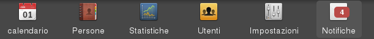

E’ possibile accedere alla sezione “notifiche” dal menu principale:
Il numero all’interno del riquadro rosso indica il numero di notifiche non lette.
Le notifiche vengono inviate ogni qualvolta una persona aggiunge o rimuove la propria disponibilità ad un turno.
Nota
Questa sezione è accessibile solo ai membri dello staff o amministratori
In questa sezione sono elencate le notifiche ricevute, le notifiche evidenziate in giallo sono quelle non lette.
Per modificare lo stato di una o più notifiche è sufficiente selezionarle ed utilizzare il selettore in alto a destra.
Nota
Le notifiche che un membro dello staff riceverà sono configurare nella sezione impostazioni